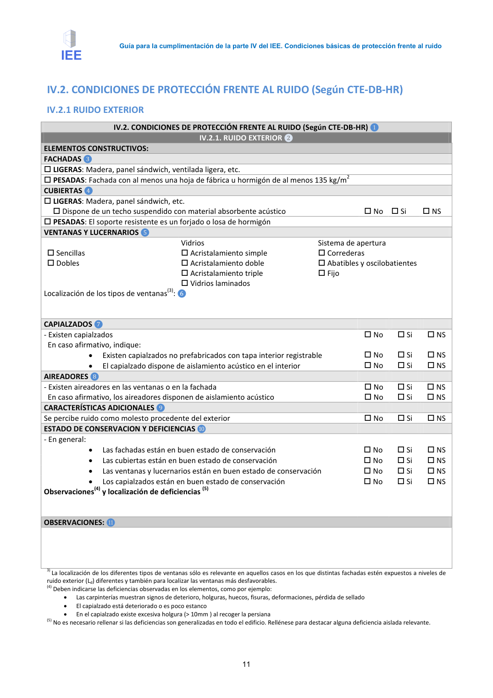
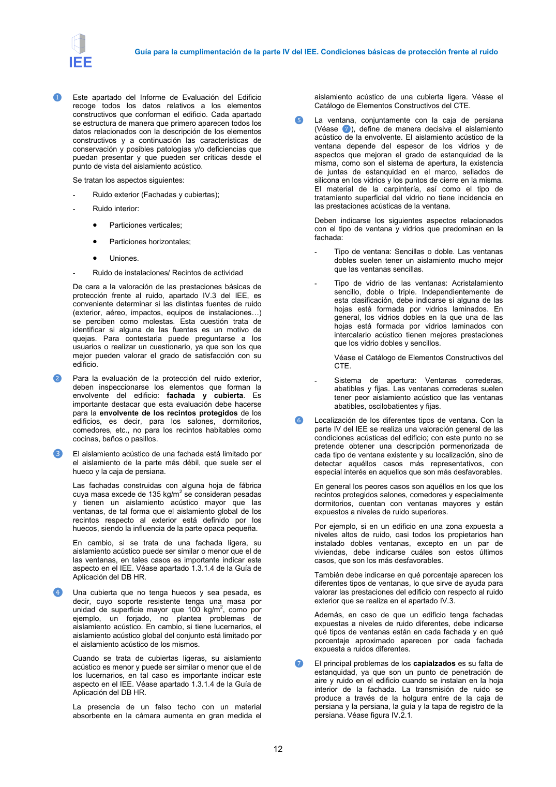
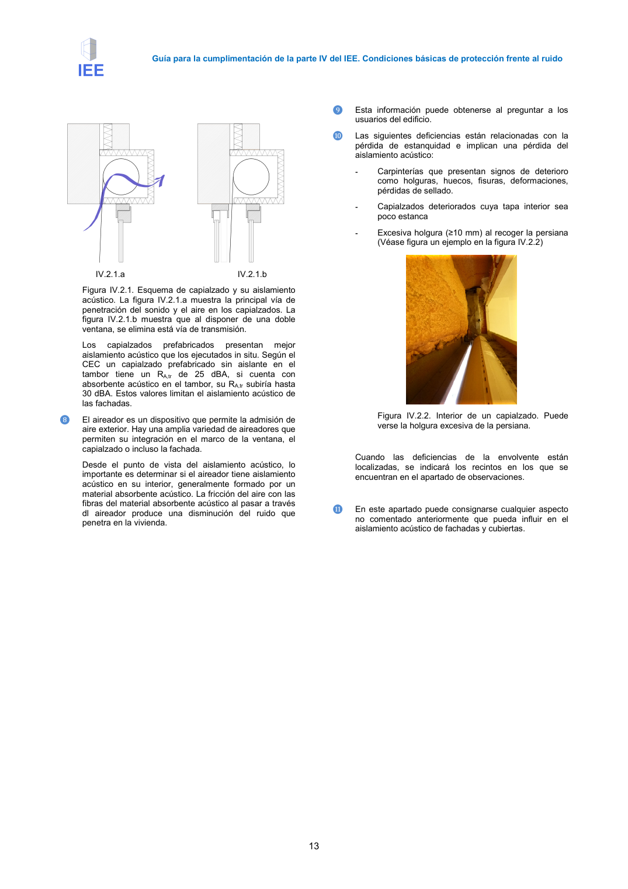
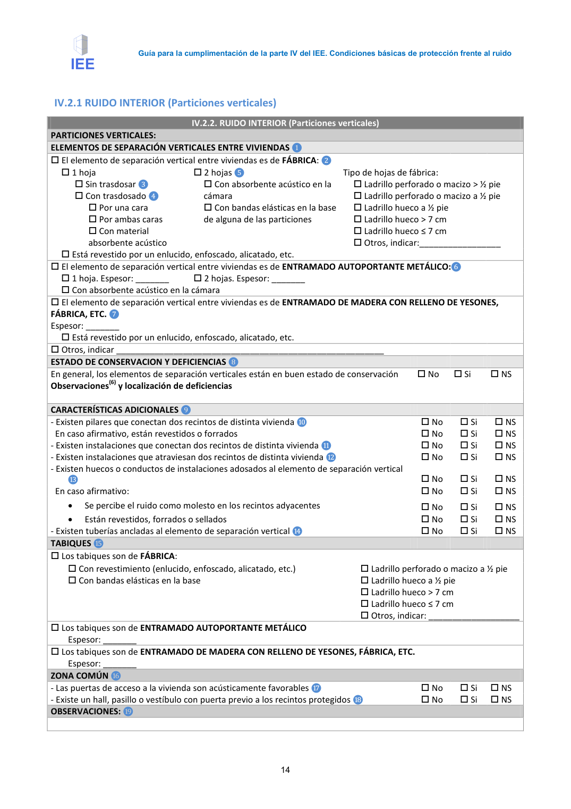

<!doctype html>
<html lang="es"><head><meta charset="utf-8">
<meta name="viewport" content="width=device-width, initial-scale=1">
<title>GUIA · IV.2. CONDICIONES DE PROTECCIÓN FRENTE AL RUIDO (Según CTE-DB-HR) IV.2.1 RUIDO EXTERIOR</title><link rel="stylesheet" href="../estilo.css">
</head><body>
<nav><a href="../index.html">Índice</a> › <a href="../doc/guia-pdf-a5d4ef5252ba-2016-11-01-813669d3066c.html">GUIA</a> › a0011</nav>

<header class="meta">
<p><a href="../doc/guia-pdf-a5d4ef5252ba-2016-11-01-813669d3066c.html">GUIA</a> · IV.2. CONDICIONES DE PROTECCIÓN FRENTE AL RUIDO (Según CTE-DB-HR) IV.2.1 RUIDO EXTERIOR · versión 2016-11-01 · capa guia</p>
</header>
<div class="cita"><strong>Cita:</strong> GUIA · ID técnico a0011 · IV.2. CONDICIONES DE PROTECCIÓN FRENTE AL RUIDO (Según CTE-DB-HR) IV.2.1 RUIDO EXTERIOR · páginas físicas pág. 11-14 (impresas: ['11', '12', '13', '14'])</div>
<p>Formatos: <a href="../../contenido/docs/GUIA-PDF-a5d4ef5252ba/2016-11-01__813669d3066c/apartado/a0011__iv-2-condiciones-de-proteccion-frente-al-ruido-segun-cte.json">JSON compacto</a> · <a href="../../contenido/docs/GUIA-PDF-a5d4ef5252ba/2016-11-01__813669d3066c/apartado/a0011__iv-2-condiciones-de-proteccion-frente-al-ruido-segun-cte.md">Markdown</a> · <a href="../../contenido/docs/GUIA-PDF-a5d4ef5252ba/2016-11-01__813669d3066c/fuente.pdf">PDF fuente</a></p>
<p><a href="../doc/guia-pdf-a5d4ef5252ba-2016-11-01-813669d3066c.html">Ámbito del documento</a> · <a href="../doc/guia-pdf-a5d4ef5252ba-2016-11-01-813669d3066c.html#ambito">texto del ámbito</a> ·
<a href="../doc/guia-pdf-a5d4ef5252ba-2016-11-01-813669d3066c.html">documento y tablas</a></p>
<nav><a href="guia-pdf-a5d4ef5252ba-2016-11-01-813669d3066c__a0010.html">← OBSERVACIONES:</a> <a href="guia-pdf-a5d4ef5252ba-2016-11-01-813669d3066c__a0012.html">IV.2.1 RUIDO INTERIOR (Particiones verticales) →</a></nav>
<h1>IV.2. CONDICIONES DE PROTECCIÓN FRENTE AL RUIDO (Según CTE-DB-HR) IV.2.1 RUIDO EXTERIOR</h1>
<p>Tipo: referencias, formulas, tablas, figuras · nivel 3 · sección estimada: Anejo 3. Valoración del aislamiento acústico de elementos de separación horizontales y sus mejoras · padre: a0003</p>
<pre class="literal">IV.2. CONDICIONES DE PROTECCIÓN FRENTE AL RUIDO (Según CTE-DB-HR) IV.2.1 RUIDO EXTERIOR
IV.2.1 RUIDO EXTERIOR
IV.2. CONDICIONES DE PROTECCIÓN FRENTE AL RUIDO (Según CTE-DB-HR) ❶
IV.2.1. RUIDO EXTERIOR ❷
ELEMENTOS CONSTRUCTIVOS:
FACHADAS ❸
LIGERAS: Madera, panel sándwich, ventilada ligera, etc.
PESADAS: Fachada con al menos una hoja de fábrica u hormigón de al menos 135 kg/m2
CUBIERTAS ❹
LIGERAS: Madera, panel sándwich, etc.
 Dispone de un techo suspendido con material absorbente acústico
 No  Si
 NS
PESADAS: El soporte resistente es un forjado o losa de hormigón
VENTANAS Y LUCERNARIOS ❺
 Sencillas
 Dobles
Vidrios
 Acristalamiento simple
 Acristalamiento doble
 Acristalamiento triple
 Vidrios laminados
Sistema de apertura
 Correderas
 Abatibles y oscilobatientes
 Fijo
Localización de los tipos de ventanas(3): ❻
CAPIALZADOS ❼
- Existen capialzados
 No
 Si
 NS
En caso afirmativo, indique:
•
Existen capialzados no prefabricados con tapa interior registrable
 No
 Si
 NS
•
El capialzado dispone de aislamiento acústico en el interior
 No
 Si
 NS
AIREADORES ❽
- Existen aireadores en las ventanas o en la fachada
 No
 Si
 NS
En caso afirmativo, los aireadores disponen de aislamiento acústico
 No
 Si
 NS
CARACTERÍSTICAS ADICIONALES ❾
Se percibe ruido como molesto procedente del exterior
 No
 Si
 NS
ESTADO DE CONSERVACION Y DEFICIENCIAS ❿
- En general:
•
Las fachadas están en buen estado de conservación
 No
 Si
 NS
•
Las cubiertas están en buen estado de conservación
 No
 Si
 NS
•
Las ventanas y lucernarios están en buen estado de conservación
 No
 Si
 NS
•
Los capialzados están en buen estado de conservación
 No
 Si
 NS
Observaciones(4) y localización de deficiencias(5)
OBSERVACIONES: ⓫
3) La localización de los diferentes tipos de ventanas sólo es relevante en aquellos casos en los que distintas fachadas estén expuestos a niveles de
ruido exterior (Ld) diferentes y también para localizar las ventanas más desfavorables.
(4) Deben indicarse las deficiencias observadas en los elementos, como por ejemplo:
•
Las carpinterías muestran signos de deterioro, holguras, huecos, fisuras, deformaciones, pérdida de sellado
•
El capialzado está deteriorado o es poco estanco
•
En el capialzado existe excesiva holgura (&gt; 10mm ) al recoger la persiana
(5) No es necesario rellenar si las deficiencias son generalizadas en todo el edificio. Rellénese para destacar alguna deficiencia aislada relevante.

Guía para la cumplimentación de la parte IV del IEE. Condiciones básicas de protección frente al ruido
12
❶
Este apartado del Informe de Evaluación del Edificio
recoge todos los datos relativos a los elementos
constructivos que conforman el edificio. Cada apartado
se estructura de manera que primero aparecen todos los
datos relacionados con la descripción de los elementos
constructivos y a continuación las características de
conservación y posibles patologías y/o deficiencias que
puedan presentar y que pueden ser críticas desde el
punto de vista del aislamiento acústico.
Se tratan los aspectos siguientes:
-
Ruido exterior (Fachadas y cubiertas);
-
Ruido interior:
•
Particiones verticales;
•
Particiones horizontales;
•
Uniones.
-
Ruido de instalaciones/ Recintos de actividad
De cara a la valoración de las prestaciones básicas de
protección frente al ruido, apartado IV.3 del IEE, es
conveniente determinar si las distintas fuentes de ruido
(exterior, aéreo, impactos, equipos de instalaciones=)
se perciben como molestas. Esta cuestión trata de
identificar si alguna de las fuentes es un motivo de
quejas. Para contestarla puede preguntarse a los
usuarios o realizar un cuestionario, ya que son los que
mejor pueden valorar el grado de satisfacción con su
edificio.
❷
Para la evaluación de la protección del ruido exterior,
deben inspeccionarse los elementos que forman la
envolvente del edificio: fachada y cubierta. Es
importante destacar que esta evaluación debe hacerse
para la envolvente de los recintos protegidos de los
edificios, es decir, para los salones, dormitorios,
comedores, etc., no para los recintos habitables como
cocinas, baños o pasillos.
❸
El aislamiento acústico de una fachada está limitado por
el aislamiento de la parte más débil, que suele ser el
hueco y la caja de persiana.
Las fachadas construidas con alguna hoja de fábrica
cuya masa excede de 135 kg/m2 se consideran pesadas
y tienen un aislamiento acústico mayor que las
ventanas, de tal forma que el aislamiento global de los
recintos respecto al exterior está definido por los
huecos, siendo la influencia de la parte opaca pequeña.
En cambio, si se trata de una fachada ligera, su
aislamiento acústico puede ser similar o menor que el de
las ventanas, en tales casos es importante indicar este
aspecto en el IEE. Véase apartado 1.3.1.4 de la Guía de
Aplicación del DB HR.
❹
Una cubierta que no tenga huecos y sea pesada, es
decir, cuyo soporte resistente tenga una masa por
unidad de superficie mayor que 100 kg/m2, como por
ejemplo,
un
forjado,
no
plantea
problemas
de
aislamiento acústico. En cambio, si tiene lucernarios, el
aislamiento acústico global del conjunto está limitado por
el aislamiento acústico de los mismos.
Cuando se trata de cubiertas ligeras, su aislamiento
acústico es menor y puede ser similar o menor que el de
los lucernarios, en tal caso es importante indicar este
aspecto en el IEE. Véase apartado 1.3.1.4 de la Guía de
Aplicación del DB HR.
La presencia de un falso techo con un material
absorbente en la cámara aumenta en gran medida el
aislamiento acústico de una cubierta ligera. Véase el
Catálogo de Elementos Constructivos del CTE.
❺
La ventana, conjuntamente con la caja de persiana
(Véase ❼), define de manera decisiva el aislamiento
acústico de la envolvente. El aislamiento acústico de la
ventana depende del espesor de los vidrios y de
aspectos que mejoran el grado de estanquidad de la
misma, como son el sistema de apertura, la existencia
de juntas de estanquidad en el marco, sellados de
silicona en los vidrios y los puntos de cierre en la misma.
El material de la carpintería, así como el tipo de
tratamiento superficial del vidrio no tiene incidencia en
las prestaciones acústicas de la ventana.
Deben indicarse los siguientes aspectos relacionados
con el tipo de ventana y vidrios que predominan en la
fachada:
-
Tipo de ventana: Sencillas o doble. Las ventanas
dobles suelen tener un aislamiento mucho mejor
que las ventanas sencillas.
-
Tipo de vidrio de las ventanas: Acristalamiento
sencillo, doble o triple. Independientemente de
esta clasificación, debe indicarse si alguna de las
hojas está formada por vidrios laminados. En
general, los vidrios dobles en la que una de las
hojas está formada por vidrios laminados con
intercalario acústico tienen mejores prestaciones
que los vidrio dobles y sencillos.
Véase el Catálogo de Elementos Constructivos del
CTE.
-
Sistema
de
apertura:
Ventanas
correderas,
abatibles y fijas. Las ventanas correderas suelen
tener peor aislamiento acústico que las ventanas
abatibles, oscilobatientes y fijas.
❻
Localización de los diferentes tipos de ventana. Con la
parte IV del IEE se realiza una valoración general de las
condiciones acústicas del edificio; con este punto no se
pretende obtener una descripción pormenorizada de
cada tipo de ventana existente y su localización, sino de
detectar aquéllos casos más representativos, con
especial interés en aquellos que son más desfavorables.
En general los peores casos son aquéllos en los que los
recintos protegidos salones, comedores y especialmente
dormitorios, cuentan con ventanas mayores y están
expuestos a niveles de ruido superiores.
Por ejemplo, si en un edificio en una zona expuesta a
niveles altos de ruido, casi todos los propietarios han
instalado dobles ventanas, excepto en un par de
viviendas, debe indicarse cuáles son estos últimos
casos, que son los más desfavorables.
También debe indicarse en qué porcentaje aparecen los
diferentes tipos de ventanas, lo que sirve de ayuda para
valorar las prestaciones del edificio con respecto al ruido
exterior que se realiza en el apartado IV.3.
Además, en caso de que un edificio tenga fachadas
expuestas a niveles de ruido diferentes, debe indicarse
qué tipos de ventanas están en cada fachada y en qué
porcentaje aproximado aparecen por cada fachada
expuesta a ruidos diferentes.
❼
El principal problemas de los capialzados es su falta de
estanquidad, ya que son un punto de penetración de
aire y ruido en el edificio cuando se instalan en la hoja
interior de la fachada. La transmisión de ruido se
produce a través de la holgura entre de la caja de
persiana y la persiana, la guía y la tapa de registro de la
persiana. Véase figura IV.2.1.

Guía para la cumplimentación de la parte IV del IEE. Condiciones básicas de protección frente al ruido
13
IV.2.1.a
IV.2.1.b
Figura IV.2.1. Esquema de capialzado y su aislamiento
acústico. La figura IV.2.1.a muestra la principal vía de
penetración del sonido y el aire en los capialzados. La
figura IV.2.1.b muestra que al disponer de una doble
ventana, se elimina está vía de transmisión.
Los
capialzados
prefabricados
presentan
mejor
aislamiento acústico que los ejecutados in situ. Según el
CEC un capialzado prefabricado sin aislante en el
tambor tiene un RA,tr de 25 dBA, si cuenta con
absorbente acústico en el tambor, su RA,tr subiría hasta
30 dBA. Estos valores limitan el aislamiento acústico de
las fachadas.
❽
El aireador es un dispositivo que permite la admisión de
aire exterior. Hay una amplia variedad de aireadores que
permiten su integración en el marco de la ventana, el
capialzado o incluso la fachada.
Desde el punto de vista del aislamiento acústico, lo
importante es determinar si el aireador tiene aislamiento
acústico en su interior, generalmente formado por un
material absorbente acústico. La fricción del aire con las
fibras del material absorbente acústico al pasar a través
dl aireador produce una disminución del ruido que
penetra en la vivienda.
❾
Esta información puede obtenerse al preguntar a los
usuarios del edificio.
❿
Las siguientes deficiencias están relacionadas con la
pérdida de estanquidad e implican una pérdida del
aislamiento acústico:
-
Carpinterías que presentan signos de deterioro
como holguras, huecos, fisuras, deformaciones,
pérdidas de sellado.
-
Capialzados deteriorados cuya tapa interior sea
poco estanca
-
Excesiva holgura (≥10 mm) al recoger la persiana
(Véase figura un ejemplo en la figura IV.2.2)
Figura IV.2.2. Interior de un capialzado. Puede
verse la holgura excesiva de la persiana.
Cuando las deficiencias de la envolvente están
localizadas, se indicará los recintos en los que se
encuentran en el apartado de observaciones.
⓫
En este apartado puede consignarse cualquier aspecto
no comentado anteriormente que pueda influir en el
aislamiento acústico de fachadas y cubiertas.

Guía para la cumplimentación de la parte IV del IEE. Condiciones básicas de protección frente al ruido
14</pre>
<h2>Referencias detectadas</h2><ul><li>DB HR</li><li>DB-HR</li><li>apartado 1.3.1.4</li></ul><h2>Tablas en estas páginas</h2><ul><li>p. 11 · <a href="../../contenido/docs/GUIA-PDF-a5d4ef5252ba/2016-11-01__813669d3066c/tabla/p0011_t01.json">p0011_t01.json</a> · <a href="../../contenido/docs/GUIA-PDF-a5d4ef5252ba/2016-11-01__813669d3066c/tabla/p0011_t01.csv">.csv</a></li><li>p. 13 · <a href="../../contenido/docs/GUIA-PDF-a5d4ef5252ba/2016-11-01__813669d3066c/tabla/p0013_t01.json">p0013_t01.json</a> · <a href="../../contenido/docs/GUIA-PDF-a5d4ef5252ba/2016-11-01__813669d3066c/tabla/p0013_t01.csv">.csv</a></li><li>p. 14 · <a href="../../contenido/docs/GUIA-PDF-a5d4ef5252ba/2016-11-01__813669d3066c/tabla/p0014_t01.json">p0014_t01.json</a> · <a href="../../contenido/docs/GUIA-PDF-a5d4ef5252ba/2016-11-01__813669d3066c/tabla/p0014_t01.csv">.csv</a></li></ul><h2>Página visual</h2><figure><a href="../../contenido/docs/GUIA-PDF-a5d4ef5252ba/2016-11-01__813669d3066c/figura/p0011.png"></a><figcaption>Página visual 11 (fuente para fórmulas/tablas/figuras)</figcaption></figure><figure><a href="../../contenido/docs/GUIA-PDF-a5d4ef5252ba/2016-11-01__813669d3066c/figura/p0012.png"></a><figcaption>Página visual 12 (fuente para fórmulas/tablas/figuras)</figcaption></figure><figure><a href="../../contenido/docs/GUIA-PDF-a5d4ef5252ba/2016-11-01__813669d3066c/figura/p0013.png"></a><figcaption>Página visual 13 (fuente para fórmulas/tablas/figuras)</figcaption></figure><figure><a href="../../contenido/docs/GUIA-PDF-a5d4ef5252ba/2016-11-01__813669d3066c/figura/p0014.png"></a><figcaption>Página visual 14 (fuente para fórmulas/tablas/figuras)</figcaption></figure><p class="aviso">PDF fuente redistribuible: copia fiel enlazada en esta página (SHA256 verificado).</p>
<footer>Generado estáticamente desde JSON normalizado; sin JavaScript ni servicios externos.
El JSON es la fuente; este HTML es caché reproducible.</footer>
</body></html>
